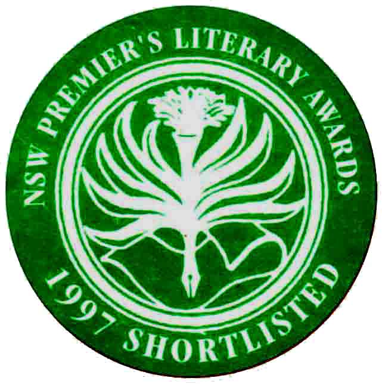

Book
Description
Winner of the Mary Gilmore Prize
(1998)
Joint winner of The Age Book of the Year Prize (the Dinny O'Hearn Poetry Prize)
(1998)

Lew's
first book has an astonishing originality in its vivacious imperatives
("Start out and remain a villainess") and cool humour ("Will technology
make me remote?"). This is often poetry of unadorned statements or
questions and subtle non-sequiturs, which are always suprising, yet
always confidently irreplaceable. She uses a variety of stanza forms
and sometimes rhymes and half-rhymes. In one of the best poems, 'They
Flew Me in on the Concorde from Paris', the detachment of the narrator
wavers between sardonic and naive to dramatic effect. Lew's brisk,
puzzling, intelligent narrators have not been heard before.
Gig Ryan, Judge, The Age Book of the Year Prize
He
was
already the least curable, most diminished of people.
Civilization
increased his moments of sadness.
I knew
this from the nature and number of scars.
Let them
be collected. Let them be classed with method.
Reading
Emma
Lew’s
poetry is like
entering a cinema after the
movie has started. Mysteriously, you arrive just at the climax. The
characters are in full flight: the urgency of their need and demand for
recognition is immediately apparent. In its scale and intensity hers is
an essentially dramatic art, one which claims its own right to speak,
with a defiant gesture and powerful assertion, against hosility,
disappointment or - worse still - indifference. This is a first
collection of uncommon strength justly called The Wild Reply.
Ivor Indyk
In The Wild Reply,
Lew
projects the cinematic mystery and baroque wit of Cocteau and
Buñuel.
ISBN 1876044136
Published 1997
56 pgs
Back to top
Of Quite Another Order
Afterlife
Procedure
In the Busy and Populous Belgium of Yesterday
Holes and Stars
Mythic Bird of Panic
Alliance IV
Berchtesgaden
Cheap Silhouette
The Baby’s Diamonds
Chernobyl: Small Talk
They Flew Me in on the Concorde from Paris
Caught in the Act of Admiring Myself
Goodbye to Maybe
Message
The Power of Loose Change
I’m Being Blackmailed Again
Multiple Kronstadts
Latecomer
Trench Music
Broken Coast
The Way out of Hungary
Before Heraldry
My Adventurer
Accountancy
Aubade
Facts About You
Remnant of Sunset
Pleiades
Sugar King
New Moon
Pond
The Last Colours
Words for Night
Lumber
Squall
Don’t be Miserable
Little Sister
The Truth about Love Fearlessly Told
How Like You
In a Sense All His Voyages Were Failures
Small Stakes
Lace Trade
Infamous Poem
Evolution of Rogues
The Tides
Neptune Street
Earlier Cartographers of the Moon
Bungalows
Thebes
Coal
The Understudy
The Wild Reply
Cartouche
City of Light
The Recidivist
Back to top
Reviews
Remembering
the Negatives
The
Wild Reply
Ian McBryde (poet)
Sidewalk,
No. 4, December 1999
(pgs 76-77)
The best of award-winning Melbourne poet Emma Lew’s poetry is
akin, to me, to the sensationof suddenly half-way through the day
rembering the vivid details of a strange dream you had the
night
before.
From its unsettling Maryanne Coutts front cover painting of a small
girl, numb with distress, leading a ghostly parade of figures around
some night terrain,
The
Wild Reply
remains a challenge, a map of mysteries. Lew employs no particular
adherence to form as such; many of the pieces use stanzaic structures
of two, three, four (and sometimes more) lines, which Lew occasionally
tampers with for effect, such as the final stanza of
‘Evolution
of Rogues’:
All the jottings come to nothing.
Anything terrible has
already happened.
Letters written for the
sake of forgetting
lie in little bits on
laboratory floors.
Beneath the surface of some of these poems lie a sublime hopelessness,
a beautifully-defined melancholia, such as the middle stanza of
‘Coal’:
I have nothing but slow trains,
the daily thud of vodka,
eerie light from a skull,
my diligence,
my sleep,
a reverence for iron,
machines in the dark,
the sad mystery of
mountains.
As with any collection, some poems work better than others; I did not
find myself as moved by pieces such as ‘Remnants at
Sunset’
or ‘Neptune Street’ with their short, broken,
off-centred
lines, but perhaps this is because I find myself more drawn to the
surrealistic science of Lew’s more ordered work.
She has a knack as well, of emphasising the single line with verve and
evocation - ‘The great barn bums’, ‘Bring
the
negatives’, ‘cool, deft night decants the last
colours.’
I have read a comment or two in other reviews of
The Wild Reply
that suggest that some or the poems don’t work due to a
vagueness
of intent, or a lack of actual ‘subject matter’ as
such. In
the end, I cannot agree. Lew’s poetry, often by the nature of
its
(only seemingly) scattered arrangement, produces an unsettling, elegant
disquiet which can remain with the reader long after the book has been
put down.
If you have not yet read
The
Wild Reply, do so and be swept into Lew’s world
of drowned jewels and the celebration of dust. Oh yes, and bring the
negatives.
Back to top
Hinterlands
The
Wild Reply
Tracy Ryan
Poetry Review,
Vol. 89, No.1,
Spring 1999
Emma Lew too moves in unaccustomed regions, as the haunting cover
painting of her book
The
Wild Reply
might indicate. That title can be read as description or sentence: her
reply to poetic predecessors is unbroken-in, untamed by their
conventions, and her voices are multiple, if insistent on certain
themes. Lew possesses a freedom of diction reminiscent, if we must have
predecessors, of Gig Ryan’s, but all her own in style. She
can be
weirdly gothic (‘The Recidivist’, ‘My
Adventurer’) and repetitively focussed on the narcotic, the
opiate, the world of shadow - ‘shiver’ is a
signature word
for Lew - or cuttingly terse - ‘Smile at me like you smile at
police’ (‘Little Sister’),
‘...you can no more
trick / the universe into granting favours / than your parents into
loving you’ (‘Earlier Cartographers of the
Moon’) -
almost in the manner of a John Forbes; or again a subtle evoker of
sparse real and psychic landscapes (‘Pond’,
‘Lumber’). Though her poems have been widely
published in
periodicals, this is Lew’s first published collection, and it
is
exciting to find a first book that immediately strikes out in its own
direction/s rather than playing it safe.
Back to top
Books in Brief
The Wild Reply
Adam Aitken
The Australian’s Review of Books,
The
Australian, Vol. 3, No. 8, November 1998
Of these poets,
Alison Croggon
[
The
Blue Gate]
is the most self-consciously analytical and philosophical, almost
old-fashioned; Coral Hull [
How
Do
Detectives Make Love?] is the most political, a poet with
a
mission. Emma Lew’s approach is the least traditional and
probably the
hardest to grasp: there is little desire to define identity, or use
poetry as a vehicle for social protest.
In
The Wild Reply,
Lew
projects the cinematic mystery and baroque wit of Cocteau and
Buñuel.
Lew’s ‘wildness’ speaks through masks and
discontinuous utterance. This
is poetry that speaks neither for nor against an originating self, but
a personality is present, putting on its faces in dusty theatre props
rooms - the place for ‘portraits / Not touched up’.
Here we find sympathetic magic and spells for life’s
ineffable
randomness. ‘Listen, I am / the doctor of this /
theatre’ Lew - writes
playfully, assertively. Living is a profound performance, ‘an
optics so
slim, / a to-and-fro illusion / of seeing and touching’.
Routine is
dissolved in alienation-effects and weird metaphor. Mostly she gets
away with it. There’s a public realm the reader can recognise
as
historical and real. But she cheerfully admits her expressionistic
denial of everyday interpretations of life. Her ambivalence undercuts
the tableaux and souvenirs of mere artfulness: ‘What smooths
the
pliable into the mythical, the icon into its frame?’ Is there
an answer
to this that poetry should supply? Not here. Ultimately it is not
experience offered second-hand; nothing in Lew’s work will
seem as
familiar as that.
Back to top
Review
The
Wild Reply
Kris Hemmensley
Island, No.
75, Winter 1998
Although Emma Lew’s constructions aren’t obviously
hitched to anything
crying out to be said, emerging like runes or stars’
captions, parody
of tarot or I Ching, they’re evidently composed of the stuff
of such
urgency. The model for their discontinuity and juxtapositional
surprise, all of their tricks at the expense of the traditional
address, seems to be the surrealism surviving contemporary American
practice, thus Ashbery, Palmer, Coolidge, Tate and behind them
what’s
left of the philosophising Wallace Stevens. But Lew’s poems
are
aggregates of effects, where saying isn’t how one begins but
where one
hopes to finish up, in the nature, I suppose, of ‘the wild
reply’. So
one recognises that postmodern lyricism which disports as and delights
in its hermeticism.
Only when one catalogues these effects does a vocabulary of illness,
death, misery, violence, of hankering after the otherwise and the
elsewhere, of darkness and its emotional palette, of what
I’ll call the
sado-masochistic dealing in duality, emerge. Their apotheosis might be
in the poem ‘How Like You’, whose addressee is
cholera, ‘a surprise
visitor playing Cupid’, and whose supplicant croons for her
god to
‘rise like Islam this mauve morning, / inventing dark and
savage
deserts. / Tonight you launch them from the spire / and
they’ll spread
like spiny fire’. Given, then, that sensible declaration is
largely
bypassed or suppressed, is this poetry a massive avoidance or
dissembling?
Or, with Paul Celan in mind, is the world so monstrous that only poetic
codification can support its telling? A handful of poems, including
‘Of
Quite Another Order’ with its hypnotic refrain ‘Let
them be collected.
Let them be classed with method’, and the tragedies of
‘Broken Coast’
and ‘The Truth About Love Fearlessly Told’, return
pleasure and
profundity to a reading too often ambushed by almost formulaic
messages, memos and instructions.
The other, European, possibility arises, that Emma Lew’s
writing
represents language’s suture of history and self, but in this
first
collection it is marred by an obsessive repetition of tone and mode to
the extent that the poetic aspiration
per
se is compromised.
Back to top
Reviews
The
Wild Reply
Gloria B. Yates
Social Alternatives,
Vol. 17,
No. 2, April 1998
The title of this book is apt. The cover art is compelling; Maryanne
Coutt’s half-child, half monster, is leaving a group of
devil-worshippers at midnight. She treads her path alone. Even the
blurb by Ivor Indyk has some relationship to the text.
‘Reading Emma
Lew’s poetry is like entering a cinema after the movie has
started.
Mysteriously, you arrive just at the climax. The characters are in full
flight: the urgency of their need and demand for recognition is
immediately apparent.’ And in an ideal world Emma
Lew’s poems would be
reviewed by someone who loves them on sight rather than this reviewer
who has to read and re-read and concentrate, think, reason in an effort
to make some sense of half her work. A poem that lacks meaning may yet
convey a richness, an emotion. But with Emma Lew, poems that begin
brilliantly often bog down in their own absurdity. Let me give an
example: the poem ‘Accountancy’:
A man
invited me to wrestle,
just a man with a normal
heart.
That same commissionaire
set the forest alight.
The sky’s blue
was defeated
by his vision of little
corners,
and the half-mad were
mingled
wild in the radishes.
Summer could at any
moment
end the juggling of the
wolves.
A midnight breeze rips
the strings,
then the water attracts
us and we
dive.
More than once he falls
down in the
street
in the most calming way
I’ve ever
seen.
Ho always falls like a
moody angel -
it’s what he
means by ‘the scheme of
things’.
Now the first lines are surprisingly perceptive. I think: Yes! Every
sexual encounter begins with this tacit invitation to wrestle, the
disguised experiments at mastery. Yes, she’s right, and it is
normal.
And when that normal man becomes a commissionaire, I can accept it
because he ‘set the forest alight’ - that rage of
love is recognisable.
But by the second verse we know that that this
‘normal’ man is half
mad, and the third deliberately tries to give the impression of a
disjointed mind reflecting a fractured world. Well, for me the juggling
wolves don’t work. If they are there to prove the
world’s absurdity,
they don’t succeed. They are unbelievable, they are
irritants. I love
the last verse and its ‘moody angel’ which is
totally convincing: I
don’t believe in angels any more than I believe in juggling
wolves, but
if angels existed they could be delightfully moody, whereas wolves...
Now I’m caught in this absurdity, which is no doubt what the
poet
intended. A victory of sorts. But why turn from the sublime to
be ridiculous? The
fact is that
Lew’s best poems are the least absurd, the most sane.
‘I’m being
blackmailed again’ is an example where she stops trying to be
wild and
relaxes into lucidity - and the poem is perfect. As for
‘Caught in the
act of admiring myself’ one can only admire her, and
it’s perfectly
clear.
These poems demand careful reading and re-reading, but they are
rewarding. It’s worth deciding for yourself - am I bitching
about
another poet’s brilliance or have I hit the nail on its
creative head?
Back to top
The Wild Reply
Martin Duwell
The Weekend Australian,
14-15
March, 1998
Dragons in Their
Pleasant Palaces
is something like Porter’s 17th book of, poems;
The Wild Reply is
Emma Lew’s first.
Here, as with all good first books, one meets a consistent, unusual and
challenging voice. Most of the poems might be described as monologues
reduced to surreal narrative fragments, but there is also group of
night-saturated expressionist lyrics.
Reading most of the poems is a bit like coming to grips with a set of
intense outbursts without clues as to either the speaker or the
situation; or, to paraphrase Ivor Indyk’s comment on the
book’s cover,
to arrive at the cinema just before the climax of the film. You have
the sensation that Lew has set out to write a set of monologues from a
coherent group of speakers (family friends or family members or even
characters from fiction) and then to strip away all contextual clues.
Two things happen to the innocent reader; first we focus on the
intensity of the poem (and Lew is an intense poet) and, second, our
interpretive drive pushes us to try to intuit the situation, the key to
this particular barbarous sideshow. It’s an exciting tension
and it
sustains a brilliant first book.
Back to top
Teeming With Ideas
The
Wild Reply
Gig Ryan
The Age, 14
February 1998
Emma Lew’s first book from the prolific local Black Pepper
has a
refreshing originality of observation with vivacious imperatives:
‘start out and remain a villainess’ and cool
humour: ‘Will technology
make me remote?’. This is poetry of unadorned statements:
‘Anything
terrible has already happened’ and non-sequiturs:
‘Why would I go to
sea? where no-one can admire me?’ which are surprising and
assured,
though occasionally random and disingenuous. She uses a variety of
stanza forms, not always successfully, and sometimes rhymes and
half-rhymes.
In one of the best poems, ‘They Flew Me in on the Concorde
from Paris’,
the narrator wavers between sardonic and naive: ‘In the
carpark at the
Institute of Space Research / Women workers were performing their role
of holding up half the sky...’ Lew’s poems do not
just aim for
sincerity, which is more common than poetry, as some of
Zwicky’s [
Gatekeeper’s
Wife] and McMaster’s [
Chemical Bodies]
do; her concern,
like Peter Porter’s [
Dragon’s
In
Their Pleasant Palaces], is firstly with language, and her
shocked love poems resemble Elizabeth Barrett’s in sentiment
but with a
contemporary humour: ‘You cannot count on me for
anything’. Though the
influence of Ashbery and younger poets can be heard, at least in some
titles, her work is more direct.
Back to top
Well versed in everyday themes
The
Wild Reply
Julie Richards
Herald Sun,
2 February 1998
For those with a little more stamina and a preference for rougher
terrain, take a trip with Emma Lew or John Anderson.
Both published by Black Pepper, Lew’s
The
Wild Reply, and [John]
Anderson’s
the shadow’s keep
are challenging in their
use of language and imagery.
They depart from the usual highways and offer a somewhat harsher view
from the top...
Emma Lew’s
The
Wild Reply is
a bit like gatecrashing a party in full swing. A certain amount has
obviously gone on before our arrival, and as we make our entrance the
characters explode into action as they deal with the modern scourges of
apathy and hostility.
Though at times a little
too
cryptic, Lew’s dense images store energy like coiled
spring’s and she
unleashes them at just the right moment, resulting in poetry that can
point us in a new direction.
Both unsettling and subversive, this aggressive response to the
expressionless face of modern civilisation urges us to fight back with
passion.
Perhaps poetry is a road less travelled because of all the excess
baggage poets tend to carry. When this is expressed as metaphors, many
readers can feel they’ve missed the bus.
With Barbara Giles [
Seven
Ages],
John Anderson and Emma Lew, there is the distinct feeling of being
privy to a special moment in an ordinary life and going on a memorable
journey of discovery, for both poet and reader.
Back to top
Leading
literary line-up
[The Age Book of the Year Shortlist - Poetry]
Andrew Clark
The Age, 13
December 1997
Lew’s first book has an astonishing originality in its
vivacious
imperatives (‘Start out and remain a villainess’)
and cool humour
(‘Will technology make me remote?’). This is often
poetry of unadorned
statements or questions and subtle non-sequiturs, which are always
surprising, yet always confidently irreplaceable. She uses a variety of
stanza forms, and sometimes rhymes and half-rhymes. In one of the best
poems, ‘They Flew Me in on the Concorde from
Paris’, the detachment of
the narrator wavers between sardonic and naive to dramatic effect.
Lew’s brisk, puzzling, intelligent narrators have not been
heard before.
Back to top
Poetic
Possibilities
Danny Huppatz
Southerly,
Vol. 57, No. 4,
Summer 1997-1998
On a completely different track, Black Pepper continues its innovative
and exciting publishing effort with the first book of poetry by Emma
Lew,
The Wild Reply.
Lew’s
work is strong and polished with jagged juxtapositions of images and
ideas. Involved and intense, her poems open in the middle of a
fragmented narrative, urgent to the point of vertigo, ‘Will
technology
make me remote? / I don’t know where I am, / I never know
what’s going
to happen’. The uncertainty of Lew’s poetry takes
the reader on a
surreal roller-coaster ride into the unknown.
Lew’s narrative ‘I’ adopts a series of
different character positions
and viewpoints, the shifting ‘I’ producing a series
of short,
unexpected dramas: ‘They flew me in on the Concorde from
Paris. / We
were fortunate not to burn. / Over Shanghai I observed to my flautist
husband, / ‘Such a metropolis needs a decent opera
house.’ ‘They flew
me in on the Concorde from Paris’, like much of this
collection, moves
quickly and without fear into difficult terrain and is (thankfully) not
without its humorous moments: ‘He rejected me in late May. /
I resolved
in future to express my feelings through my garden, / With an archway
of zucchinis and cucumbers / A bed of apothecary roses and high-yield
grass seeds’.
Throughout
The Wild
Reply
there is a sense that the world has already ended, the event has
happened, and Lew is presenting the shock waves of some mysterious
unknown realm yet to be evaluated. Writing is a means to enter this
unknown realm and, like Jones [
100
Elegies for Modernity], Lew embraces its failure to really
get
anywhere in ‘Evolution of Rouges’: ‘All
the jottings come to nothing. /
Anything terrible has already happened. / Letters written for the sake
of forgetting / Lie in bits on laboratory floors.’ This
fractured world
is precariously pieced together - there are traces of love, addictions,
and the imminence of death.
The collection does have its quieter moments, less frenetic poems that
provide welcome breathing space, such as ‘Alliance
IV’ and ‘Caught in
the Act of Admiring Myself’. The latter relays a
conversation, ‘But
doctor, / I’m busy with the big nectarine in the fruit bowl /
while the
world plans around
me!’
In
‘Chernobyl: Small Talk’, Lew continues in a more
accessible vein,
‘Something about the way you dance / reminds me that I have
to sit
down. We / are beautiful as long as we are masked, / and treachery is
an affectionate game. / Like a circus, I cover my heartache. / Soon my
mistakes will make me famous.’ The reader is immediately
involved in
the poetic drama Lew creates and the juxtaposition of layers anil ideas
is unsettling yet absorbing. While
The
Wild Reply was uneven in places, I look forward to further
work
by Lew and more challenging and dynamic literature from Black Pepper.
Back to top
Soundings
from Down Under
The
Wild Reply
Nicholas Birns
Antipodes,
Vol. 11, No. 2,
December 1997 (pg. 114)
[Text not yet available]
Back to top
reviews
Emma Lew The Wild Reply
M.T.C. Cronin
Cordite,
No. 2, October 1997
Ghosts inhabit this text, as do figures ‘Of Quite Another
Order’ and
those of the ‘Afterlife’. These are poems of the
surreal, landscapes of
dream and fantasy, not just a filtering of the real world through the
lens of poetry. No simple, or even complex, narratives here. Though it
is claimed in ‘Earlier Cartographer of the Moon’
that we ‘are not free
to tell our dreams’, the dreams here are told. Drug(ged)
images of
opiates and opium, fire and fireworks, heat and flame, the burned and
burning, haunting and atonement, heaven and hell, sin and saints, magic
and chanting, skeletons and coffins, madness and death, dreaming and
deep... here we have all the altered states of poetry and the poet
telling the mysteries of love and sadness within the sacred atmospheres
of art and life. The poems unfold in darkness and shimmer in an
unearthly light. It is a text of shades.
Interestingly, none of the poems in
The
Wild Reply stretch longer than a page. Although they may
explore
the realm of the intuited, the magical, they are still incredibly
focussed and pared back, Taut ‘visions’ of the
inner life, lived in the
outer life, are not by any means exclusively interior. Words are not
thrown around here, but used sparingly in pursuit of the
‘strange’, the
‘other’. The poems may even be paradoxically
described as small
narratives that are anti-narrative in effect.
As such, they ask much of readers unfamiliar with poetry, or even those
after a yarn. They are a species of poems into which you can
‘fall’ and
enjoy the words, phrases and atmospheres they create, prior to (and
almost exclusively of) having to know what they mean. It is this play
with meaning, the possibilities at work in the creation of meaning -
not of particular words and sentences, but of the poem as a whole
living organism - by stretching and challenging predictability, that
makes for vigorous poetry.
For some this leads to, and ends with, charges of obscurity. It could
also be considered to be the essence of writing, that tracing of the
mystery of ‘being human’, which must always come
back to the human, the
condition of being such, as in ‘Holes and Stars’:
I
just got my memory back,
few loons and I would
live
in a corner at the
airport,
not for the sequence
but the agony we had to
be in,
running off with the
money
and taking our own
deaths.
Which technology will
make me remote?
I don’t know
where I am,
I never know
what’s going to happen.
In this unusual, and not easily identifiable scenario is to be found
the grounding line ‘Will technology make me
remote?’ The protagonist is
identified and by the poem’s denouement a long, perhaps
ordinary story
has been told in a short and remarkable space.
These are poems which can be read and read again and again, which if
nothing else makes the book great value for money. Unlike simple
narratives, mapped out in advance and inexorably unfurling toward an
expected end, Lew’s poems engage the reader directly with the
creation
of meaning. Rather than act as empty vessels waiting to be filled by
the reader’s predictions, the content of these poems wash and
move and
sparkle, are always open to the pleasure of interpretation. They seem
to hold something different every time they are read. In
‘Mythic Bird
of Panic’ the poet is
...a
child entrusted with state secrets,
Caught knowing too much
and too
little at once.
A tiny heart pounds
under my collar:
A disturbing package has
arrived.
The poem is that package and it disturbs. Another package is delivered
in ‘The Power of Loose Change’, where
Balanced
on tho edge of loving,
we fall silent in the
sediments,
Ethics make it possible
for us to sit
in a room together,
damned packages add to
the fire.
The blurb on the collection’s back cover states that
‘reading Emma
Lew’s poetry is like entering a cinema after the movie has
started.
Mysteriously you arrive just at the climax. The characters are in full
flight.’ This poet’s actors also strive desperately
for sense in the
senseless and the fantastic, and although we may not always
‘know’ the
scene, the stage, we are left in no doubt as to the necessity and need,
for love, understanding, opening or closure, that is at the heart of
the work.
The more accessible poems confirm this. Lew can write with energy and
complexity, and her work is often beautiful and touchingly naked in
emotion and self-recognition. ‘Alliance IV’ ends
You
cannot count on me for anything,
But suppose I volunteer
to be
harnessed?
As you know, I will be
desperate
if that’s the
costume you want me to
wear tonight.
and in ‘Caught in the Act of Admiring Myself’,
about a trip to the
doctor
But
doctor
I’m busy with
the big nectarine in
the fruit bowl
while the world plans
around me!
Yes, and I sketched
a little gesture of
doubt in the air
without moving my chin
from my hand.
This poem’s emphatic ‘Yes’ and the
‘me’ of the patient, the sufferer -
who is also an individual, an actor - is in direct contrast to the
usual powerlessness, inertia and apathy of a victim. Through humour and
parallel emotional undercurrents Lew effectively widens the scope of
her work, and creates more space in which the reader can
‘know’ the
person in the play.
Some of Lew’s phrases are delicious. All are original and
otherwordly.
If sometimes I was left wondering it was a joyful wondering. And in
‘Coal’ she does ask for forgiveness:
Forgive
me:
I’m in a
trance,
and this, is not
an age of grace.
I live my life twice -
a fiercer, ripe, real,
sulky, sepulchral,
identical storm.
And there can be no doubt the second life, or perhaps the first, is one
of poetry, one I want to share with her. The book’s title is
superlative.
Back to top
Wide
range of new poetry
The
Wild Reply
Paul Hetherington (poet)
The Canberra Times,
18 October
1997
Recently in these pages Geoff Page wrote about the way larger
Australian publishers are withdrawing from publishing poetry. Despite
this trend, a good deal of poetry continues to be published in
Australia...
Emma Lew’s
The
Wild Reply is
a debut volume of considerable interest. Both the strengths and
weakness of this volume come from its pursuit of mystery and
suggestiveness, often at the expense of definition and clarity of
writing. Some of the poems have the quality of fable or myth, as if
their reality demands a suspension of disbelief on the
reader’s part.
For Lew the act of poetry seems both an exploration of the evocations
of which language is capable, and a defiance of simple narrative
conventions. Her poems have a sense of being annotations of a place
where language and experience are more than usually entangled.
An example of her work, ‘Pleiades’, begins:
Night!
Night!
Sell me the small fires;
Pawn my winter
For the shadows of birds.
This is an impressive, shifting and indeterminate poem which invites
the reader to speculate about the act of making meaning from language.
It is as if the poem brings a kind of incantatory magic with it; a
search for the roots of understanding beneath all that is rational and
easily explicable.
Lew has a good ear for the music of phrases, and a number of her poems
are tellingly gnomic. ‘The Last Colours’ is one
such work. Though
brief, it flares in the imagination. In such poems, Lew’s
suggestiveness works entirely for her, and small poems bring large
ideas into focus, and large questions into mind.
Perhaps what is most interesting about this book is the individuality
of the poetic voice it offers, and the conviction of the poetic
enterprise it contains.
Her mostly short poems range widely, and she appears to be prepared to
trust the reader to travel with her. There is real faith in such an
enterprise, and real pleasure for those prepared to take up her
challenge.
Back to top
The Wild Reply
Angelika Fremd
Imago, Vol.
10, No. 2, Spring
1998
Emma Lew hails from Melbourne. Many of the poems in
The Wild Reply have
been published
in reputable literary magazines.
Lew’s is a new voice, the diction unusual, breathless and
thoughtful;
original. Her phrasing is reminiscent of Dorothy Porter’s
poetic
rhythms that simulate dramatic speech.
The
whisper of a new car.
The darkness of trees
and behind the
darkness.
The pipe, the cool hills
and the man.
Things you only buy once
in a life
time.
‘Afterlife’
Perhaps Lew is familiar with Wittgenstein’s theory that the
world is
made up of unrelated facts. Yet the images, the information she
collects together without attempting to create a lyrical synthesis, add
up. She rails against cruelty, indifference, disappointment, the down
side of human existence.
This is an exciting book, a poetic revolution.
Back to top
The Wild Reply
Felicity Plunkett
Heat, No.
6, 1997-1998 (pgs
203-206)
In ‘Thebes’, towards the end of her first
collection,
The Wild
Reply,
Emma Lew describes a body as ‘crepuscular’, and
though
there is blood in Lew’s poems, the bodies here are located
not in
the moment of laceration which Ryan describes [Tracy Ryan,
Bluebeard in Drag],
but beyond that, in smudgy havens, places beyond pain. The body in
twilight, then, is a motif Lew plays with here. Like Ryan,
Lew’s
poems deal with the terrain of revisited childhood and familial
violences, and the retrieval from those of innocence and passion. Yet
there’s an aloofness here, a stepping back from the immediacy
of
pain to inspect it with distance. With this come self-ironising
speakers and unexpected apostrophes - an address to cholera, or from a
younger sister asking ‘Do spies love, Em?’ These
shifts in
tone and direction give the collection a dream-like aspect, and a sense
of dreamscape logic. It also makes the collection a more playful one
than Ryan’s.
In the final poem, ‘The Recidivist’, the speaker
reminds me
of Plath’s protean speaker in ‘Lady
Lazarus’, each
contemplating wounds, wounding, and damaged bodies. Like
Plath’s
famous opening lines ‘I have done it again’, death,
in
Lew’s more riddling version, states:
‘I’ve done it. I
do it. I’ll do it again.’ It’s the same
fascination
with pain and healing, and the verge and verve of death, and a similar
cool appraisal. Yet in the last stanza of the poem, ‘Atoning
dust
blows here every day, / ancient sunlight cools my sins’ is
more
typical, to my mind, of the currents in these poems. The speakers and
feelings are often enigmatic, ambiguous, unsettled and unsettling. In
‘Cartouche’ one describes her face as
‘strange...
hieroglyphic and shadowed’. There often seems to me to be
some
sort of dust coating the images of Lew’s poems, or some sort
of
veil separating speaker from pain, and reader from speaker. I
don’t think this makes the poems less daring than
Ryan’s,
just adventurous in a different direction - that of costumery,
masquerade and carnival.
Lew’s poetry, like Ryan’s, deals with demons and
dreams,
and with hauntings, but Lew’s use of metaphor could be
described
as centrifugal, where Ryan’s tends towards the centripetal.
Ryan’s metaphors seem to me to crystallize, where
Lew’s
associative, intuitive poems move out from metaphor to metaphor. In
‘The Understudy’, for instance, there’s a
striving
outwards for meaning, a shifting from image to image. Alongside this is
a representation of the struggle to sense meaning: ‘I cut as
deeply as I can.’ ‘Earlier Cartographers of the
Moon’
metaphorises the processes of articulating and expressing pain, and
weaves images of ‘eerily managed reality’ around
the
starkness of lines like: ‘...you can no more trick / the
universe
into granting favours / than your parents into loving you.’
‘Little Sister’ similarly mixes the whimsical with
the
blunt and unflinching, following evocations of unsettlement and chaotic
emotion with the pragmatism of ‘What is left of our family /
Must
make do on cold philanthropy.’
Another strand of the collection deals with the erotic. In
‘Aubade’ Lew inflects the genre with whimsy and
understated
honesty. The speaker confronts an ominous morning, ‘massing
her
old bully self / Above us in a lurid mood’, but ultimately
feels
sheltered on the ‘tranquil shoulder’ of a lover.
Yet the
resolution is an uneasy one, as the last couplet underscores safety and
ecstasy with potential violence: ‘your trigger finger / Lays
me
out on our prairie bed.’ The wilderness of this recurs in the
collection, as the jagged energies of desire and fear run beside one
another. The vulnerability of the hearts and bodies in these poems is
also their strength: Lew writes, unflinchingly, of the impossibilty of
safety and sureness, and the erotics of courage and desire.
Back to top
True Fever
Julie Hunt (poet)
Overland,
No. 149, Summer 1997
The poems of Emma Lew in
The
Wild
Reply are from a very different world, a world in which
the idea
of gaining a sense of place and meaning through continuity would be
absurd. The cover painting depicts a macabre little girl leaving what
could be a carnival scene or a ruined theatre. Stark figures play with
a giant mask in the background. Someone is attempting a balancing
trick. All is ominous and shadowy. The departing figure, a sort of
‘wise child’, glances behind her with a knowing
look. Who is this
character? An orphan at the end of history. Someone who lives
‘heirless
/ on playthings, collectables’.
The Wild Reply
is exciting. It
is a defiant answer to a question that makes no sense. Emma Lew is not
concerned with conventional meanings. She does not ease the reader into
a poem as if into some understandable reality. The arrival is abrupt,
jagged. There is a sense of urgency:
I
need to know
the truth about
the elevator crash.
I can’t wait or
the pain will go
back into its house.
Listen, I am
the doctor of this
theatre.
‘Cheap Silhouette’
‘This theatre’ is charged territory. The terrain is
unpredictable. Emma
Lew uses whatever comes to hand - surreal image, bland statement,
sudden declaration, Hitler, Goebbels, ‘an archway of
zucchinis’. The
lack of caution is exhilarating:
There
is so little to hide behind
We are always hounding
ourselves
Why shouldn’t
we laugh, even if there
is nothing?
‘The Way out of Hungary’
There is a wry intelligence at work here. We are warned to be
attentive: ‘hoax callers are jamming the emergency
lines...’; ‘we are
beautiful as long as we are masked, / and treachery is an affectionate
game...’; ‘The agony is only put on...’
It is easier to describe the work in terms of what it does rather than
what it is. Abrupt changes of style and tone disorientate the reader.
There is a hit-and-miss quality to the writing, a sort of
stab-in-the-dark abandonment that dislocates and allows for sudden and
surprising possibilities which is what I look for in poetry - to be
startled into a new place.
Reading
The Wild Reply
is to
be in the line of random fire. Sometimes it misses but there is no
mistaking when the words meet their mark. You receive them like advice:
collect
your mail,
keep your strange name,
feed your true fever.
Back to
top
Confounding Order
Bev Roberts (poet)
Australian Book Review,
No.
191, June
1997
A recent article on Les Murray quoted his view that: ‘Poetry
consists
of three things... The thinking mind, the dreaming mind, and the body.
The body’s there for the dance, the rhythm.’ All,
yes, Les, but where
are the emotions - and the uncomfortable irrationality of emotions?
This question seemed particularly apposite when I read Emma
Lew’s
The
Wild Reply - which at some
points did indeed seem to be a wild reply to Murray’s dictum.
While the
considerable strengths of her poems include thinking, dreaming and
rhythm, they also include the impact of disturbing and pervasive
currents of emotion. In fact the whole book is charged with emotions
which confound order and certainty. The power of many poems is achieved
through the sustained tension between the assured technique, the
complex and sophisticated tropes and the fears, doubts and existential
terrors invoked in such simple terms as ‘Everything we do is
scary’, ‘I
don’t know where I am / I never know what’s going
to happen’ - and the
far from simple apprehension of
Newlyweds,
the dead in them;
War crying
Wage me! Wage me!
Orphanages of ideas.
But back to the book.
The
Wild Reply
is a first collection but for many readers it will not introduce a new
voice. Emma Lew’s work has been widely published in literary
journals
throughout Australia (and in other countries) and those
who’ve read
them - or heard them at readings - have long been looking forward to
the appearance of her first book.
Such anticipation is amply justified: this is an extraordinary book as
well as an extraordinary first book, revealing a mature and impressive
poetic talent. One of the remarkable aspects of that talent is
Lew’s
ability to create compelling first lines which draw the reader into the
poems and into immediate and intense engagement: ‘I feel that
I can
trust you with a secret...’; ‘So I became his
bluish-white partner...’;
‘Of what earthly use is Madame Bovary to me...’.
The strong and urgent
rhythms, dramatic images and passionate voice of the poems are
irresistible but sometimes bewildering, with the focus of the poem hard
to find, elusive as a dream.
‘Cheap Silhouette’, for example, begins with
‘I need to know / the
truth about / the elevator crash’, then moves through a
series of
staccato, imperative statements to a vivid but mystifying conclusion:
This
must be
the world’s
sexiest cruise,
or a speeded-up
version of
Coppelia. You
see me in a little
fury, blue halo
whirling in the
last full year
of peace.
In a cover note, Ivor Indyk responds to these features of the poems
through a cinematic analogy: ‘Reading Emma Lew’s
poetry is like
entering a cinema after the movie has started. Mysteriously, you arrive
just at the climax. The characters are in full flight: the urgency of
their need and demand for recognition is immediately
apparent.’ For me,
the experience was more intimate than film: more like walking into a
conversation which has built up and reached a point of intensity that
precludes my participation - I’m fascinated, want to join in,
but too
much has happened before my arrival.
What this really means is that Emma Lew is able to evoke those inner
states, those emotions, which are otherwise so resistant to language.
Inevitably, I suppose, there are times when language wins out: when
what’s evoked becomes febrile, almost hallucinatory, through
the
profusion of imagery and metaphor -
Night
moves like a shadow’s sense,
struggling mothwise up
from the dust,
shaping its howls and
merest dreaming,
murmuring into the skin.
But in many poems, Lew is capable of a wonderful clarity exemplified in
the concluding lines of ‘Caught in the Act of Admiring
Myself’:
I’m
busy with the big nectarine in the fruit bowl
while the world plans
around me!
Yes, and I sketched
a little gesture of
doubt in the air
without moving my chin
from my hand.
The Wild Reply
demonstrates
the variety as well as the virtuosity of Lew’s writing as she
moves
with assured case between the technically difficult/thematically
complex (‘Mythic Bird of Panic’, ‘The
Tides’, ‘They Flew Me in on the
Concorde from Paris’) and the simpler meditative lyricism of
poems like
‘Aubade’, ‘Pleiades’,
‘Pond’, ‘Lumber’ and
‘Words for the Night’. Some
of her finest lines are in these latter poems. Apart from
characteristically gripping openings such as ‘Night! Night! /
Sell me
the small fires’ (‘Pleiades’); and
‘Dawn’s massing her old bully self /
Above us in a lurid mood,’ (Aubade), I particularly liked
this passage
from ‘Lumber’:
It is
this anaesthetic
air, energy
of crouching mountains
that holds the trees
in a wild lull...
The Wild Reply
is an
accomplished, challenging collection with a strength and consistent
poetic quality unusual in a first book. Its publication by Black Pepper
highlights the major contribution that small press is now making to
contemporary Australian poetry.
Back to top
Book Reviews
The
Wild Reply
Judith Bishop
Verse
Images in Emma Lew’s striking first book,
The Wild Reply, do
not come as
softly to the table of symbolic resonance. The dramatic narrative
voices of these poems render the material world opaque, projecting the
psychic states of a speaking ‘I’. This is the first
stanza of ‘New
Moon’:
First
kisses,
all salty.
The muteness of public
places.
It is evening.
The landscape twitches
the way a lunatic waves
goodbye.
The last lines of this stanza show an anthropomorphizing technique Lew
has developed throughout
The
Wild
Reply, it is one element of the affect of her poems. Dawn
‘mass[es] her old bully self’, cholera
‘worr[ies] over the health of
strangers’, night ‘shap[es] its howls and merest
dreamings’, planets
‘moan’, the moon is ‘sad,
striving’. In ‘Lumber’ the technique is
used
to subtle effect (‘prowl of dark’,
‘crouching mountains’):
Seek
here
for that purple strength,
slow curtain
of an arcane light;
the pull of shadow,
prowl of dark, the
benumbing,
the quiet fuming.
It is this anaesthetic
air, energy
of crouching mountains
that holds the trees
in wild lull:
smoky fingers
to lure a sun.
An occasional poem, such as ‘Pond’, gives a glimpse
of the world
through a lens less tinged with subjectivity, yet still emotive. Here
the sense of touch is invoked to describe the intangible qualities of
light:
Shadows
grab the nettle.
Dusk gains as it touches,
with cool-warm movement,
soft-solid colour.
Day itself
seems to glide down to
earth,
finished, fingered,
like a
father’s ghost.
Some of Lew’s most effective poems are startling renditions
of the
conflicting impulses of desire and repulsion which inhabit us, and the
conventional idioms which give them voice. She frequently splices moods
and tenses, the shifting inflections of the narrative voice mirroring
the asequentiality of thought in an agitated mind. The poem
‘Chernobyl:
Small Talk’ makes memorable use of these devices:
I
feel that I can trust you with a secret:
I’ve been
ordered to fall in love
with you
and I’m
insanely worried about my
eyes.
To this, add the
collapse of my own
private world. I would
kiss you
but am afraid to soil
myself.
I’m inaudible.
I’m babbling and my
hands
are in a constant state
of motion, for
love is immortal and
lingers on
in dreams and waking
visions. A
fanatic
is not expected, but
allow me to
hanker.
Come over, the apples
are ripe
in my
guardian’s orchards.
On the negative side, Lew’s poetry does not substantially
gain by its
collection in a book. Poems in which the words are carefully weighted,
which arrest one’s attention when discovered singly in
journals, can
seem resoundingly dark in the company of like poems; Lew’s
chosen
diction is collectively heavy with symbolism. In the closely-crafted
poem ‘Words for Night,’ we Scan night, burning,
terrible, moody, howls,
savage, aching, dark, dying, dead. Lew’s diction is an
element of her
striking originality; as the poet Gig Ryan has remarked, the narrative
voices of Lew’s poetry ‘have not been heard
before.’ Yet the public
success of Lew’s book cannot be solely attributed to its
newness. Her
modulations of tone and word collocations are often beautifully
precise, as in the choice of ‘wayward’ in this
stanza of ‘Words for
Night’:
There
is an opium of the night,
epic, luminous, wayward -
a sad, striving moon
lost in what is
whispered.
There is a skilled use of internal rhyme in this and other poems;
end-rhyme is occasionally used unobtrusively and to strong effect. Lew
alternates between employing regular stanzas of between two and eight
lines and a freer delineation of stanzas, modulating the impact of
lines; where regular stanzas are used, there is often a tension
produced between the content and form of the poem. A small number of
poems experiment with a more widely-spaced lineation, but for the most
part, the effect the poems seek is one of spatial and psychological
density.
Back to top
Connections & Contrasts
The
Wild Reply
Michelle Mee (poet)
Australian
Women’s Book Review,
Vol. 9, No. 2-3, Spring 1997
As the publishing industry gradually prints more Australian women
poets, the marvellously diverse nature of women’s voices is
heard and
can be celebrated. The four collections [Ludwika Amber,
Our Territory,
Alison Croggon,
The
Blue Gate, Emma Lew,
The
Wild Reply, Sarah Day,
Quickening],
discussed in the
following, indicate something of the fecundity, intensity, method and
power of work currently being produced by Australian women writers.
Sometimes there are connections, other times contrasts...
Emma Lew’s collection
The
Wild Reply
made me feel that I had arrived when the party was well under way, that
everybody else knew each other and was talking, tongues loosened by
wine, so that I could not contribute, or even give a wild response. But
I shall try.
I’m sure that it is good poetry. I know that it states the
case of the
contemporary poet/artist. Perhaps it is post-feminist. It is surely a
strong, strident intelligent voice. Emma Lew’s eloquence
remains after
the book has been read.
There is in places a gothic quality: ‘I have shivered with
jackals /
and half-lit gods / and the heavens in this lurching, / tender
gloom’.
But it is not in the subject matter - this is a poem about Africa. It
is the language that vaults and spires and arches in the architecture
of the mind. It is not sensual poetry, but witty and artful.
Sometimes the poetry has a quality of being oral history transcribed
onto the page. But the reader only comes in at the middle of the story.
From the fragments given, however, we can imagine the whole story. Our
minds are teased with the detail of a picture. We make up, search out
the rest.
Other times there is the suggestion, the feeling, of intended or
forthcoming violence. There is threatening confrontation in the
physicality of, ‘a fury locked / in the body
crepuscular’.
I would like to have more points of reference than I was given, as a
reader, in
The Wild
Reply.
Back to top
Elegance
and whimsy
The
Wild Reply
Paul Cliff
New England Review,
No. 6,
Winter 1997
Emma Lew’s finely-produced tome from small Victorian
publisher Black
Pepper (with the aid of the obligatory Australia Council grant) appears
a timely debut, in view of the extensive acknowledgments list showing
publication across Australia and overseas. Born in 1962,
Lew’s work
straddles that modernist/post-modernist blur. The great bulk of the 56
poems are written in the first person, an often strangely removed
‘I’
or ‘we’, with a foot firmly in the surreal:
They
will be making snow tonight;
it will be beautiful and
we can
afford it.
Come quickly, by
yourself,
bring the negatives.
‘Holes and Stars’
The personas speak of estranged love, often in an undefined-sex voice
(male or female?). For me, there is something of the Latin/South
American tradition in such lines as: ‘the tactile celibacy of
the
machine’, somewhere in the general area in which other
Australians such
as Peter Boyle have been seen to work: ‘pawn my winter / for
the
shadows of birds’ (from ‘Pleiades’).
There is also a recurring menace
and a lean to the whimsically sinister: ‘The
Fuhrer’s pockets are
always filled with chocolates’ (from
‘Berchtesgaden’), and an Emily
Dickinsonian tightness, with the title often serving as the
poem’s
first line. There is, too, a tilt towards the smart-talk of the New
York / John Forbes school (Lew acknowledges Forbes for support in the
pre-matter):
I
delivered my acceptance speech in the Great
Hall
of the
People...
calling on steel makers
to take up
the way of
Lamism.
‘Lets start
calming down!’ I cried...
‘Let’s
get off painting and onto
banking.’
‘They Flew Me In On The Concorde From Paris’
Or again:
We
punch shapes into space
which a museum exists to
defend...
If a head is complicated,
it can be used as a
chapel;
‘The Power of Loose Change’
There is likewise a welcome lyricism, as in such lovely lines as:
‘Like
water crumbling in a place of stones’
(‘I’m Being Blackmailed Again’),
or the extended image of dawns which:
methodically lick out street lights,
scuttle cross-dressers from the soiree,
strain night sweats into resealable vials
‘Aubade’
Generally Lew’s is a somewhat abstracted world - engaging the
human-made (laboratories, asylums and geometry) rather than the overtly
natural world. A creditable first collection.
Back to top
Books
The
Wild Reply
Tim Thorne
The Mercury, 12 May 1997
One of the most exciting talents among emerging poets in this country
belongs to Emma Lew, from Melbourne, whose first book,
The Wild Reply
demonstrates a high
degree of skill and a quirky, idiosyncratic approach to experience and
language, resulting in poetry which makes for compulsive reading.
Back to top
Poetry
The
Wild Reply
Alan Wearne (author and
poet)
Eureka Street, Vol. 7, No. 4, May 1977
I am only interested in promoting those volumes of verse that seem an
adventure for the reader. All of these four volumes [Emma Lew,
The Wild Reply,
Judith Beveridge,
Accidental
Grace, Les Murray,
Subhuman
Redneck Poems, Lee Fuhler,
Dogtown]
have adventure
(though the adventure may not be the one the poet had in mind). None
plays safe. Take this, for example, from Emma Lew’s
‘How Like You’?
How
like you, cholera,
to worry over the health
of strangers.
And you have let your
sweetheart go
hungry,
while your legend
crossed the country,
a surprise visitor
playing Cupid,
keeping the happy happy
from guest wing to
portrait gallery,
prickly wilderness to
deepest city.
Like many a Lew poem it smoulders and blazes; it stares straight at
you, ready to seduce, ready (even better - or worse) to spook.
‘Oh my
God!’ you ask, ‘Where’s the woman taking
us this time?’ Disarming
stuff. Most poets can juxtapose at times, but few can do it like her.
With Ramona Barry and Cassie Lewis (who have yet to appear in volumes)
Lew is as formidable a new Australian poet as any in the nineties. Were
she a writer of prose fiction (damn refuge of the contemporary
over-rated) she would be in line for a call from
Vogue or
The Good Weekend,
pleased to
announce her appointment as the latest fad goddess. Luckily good verse
requires more brain power: though that doesn’t mean you
can’t just soak
mind and imagination in Lew’s sombre lyrics.
There’s a chilling
portrait of Hitler and henchmen, at home in Berchtesgaden, a
reminiscence of weirdly black humour from (I think) a Chinese woman
politician, love poems, landscapes, evocations of the European past.
The tone might be consistantly intense (though never bleak) but the
subject matter covers considerable imaginative territory.
I
need to know
the truth about
the elevator crash,
I can’t wait or
the pain will go
back into its house.
Listen, I am
the doctor of this
theatre. Emotions,
reactions -
they’re
my business.
I’ll say they are.
Back to top